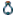
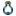

Experience Flask I
Фляга опыта I
1,395 XPLevel 30 from zero30 уровней с нуляFirst reusable reserve.
Первый многоразовый запас.
Fabric · Minecraft 1.21.11 · v0.1.0
Reusable XP flasks for survival progression, vanilla Mending, and a second chance after death.
Многоразовые фляги опыта для выживания, ванильной Починки и второго шанса после смерти.
Overview
Обзор
XP Reserve stores exact XP points rather than subtracting and restoring abstract levels. Fill a flask when you have more experience than you want to risk, then release it later when Mending or your XP bar needs it.
XP Reserve хранит точные очки XP, а не вычитает и возвращает абстрактные уровни. Наполните флягу, когда не хотите рисковать опытом, и высвободите его позже — для Починки или шкалы опыта.
Flasks
Фляги
First reusable reserve.
Первый многоразовый запас.
Diamond-block upgrade.
Улучшение алмазным блоком.

Recovery Compass upgrade.
Улучшение компасом восстановления.

Totem upgrade; becomes Flask III after a capture.
Улучшение тотемом; после сохранения становится Флягой опыта III.
Fill states are a clear visual guide. A flask glints only when it is exactly full.
Состояния заполнения — наглядный ориентир. Фляга блестит только при точном полном заполнении.
Recipes
Рецепты


Amethyst Shard · Lapis Lazuli · Glass Bottle
Осколок аметиста · Лазурит · Стеклянная бутылочка
Flask I + Diamond Block → Flask II
Фляга I + Алмазный блок → Фляга II
Flask II + Recovery Compass → Flask III
Фляга II + Компас восстановления → Фляга III

Flask III + Totem of Undying → Soul Flask
Фляга III + Тотем бессмертия → Фляга души
Valid stored XP is preserved through every upgrade.
Сохранённый XP корректной фляги переносится при каждом улучшении.
Controls & Mending
Управление и Починка
Store XP
Сохранить XP
Release XP
Высвободить XP
Soul Flask
Recover the drop yourself: lava, the void, and item despawn can still destroy it. keepInventory leaves it armed.
Подберите предмет сами: лава, пустота и исчезновение предмета всё ещё могут его уничтожить. keepInventory оставляет флягу заряженной.
Progression
Прогресс
Flask I becomes discoverable with amethyst; each owned flask reveals the next upgrade recipe.
Рецепт Фляги I открывается с аметистом; каждая полученная фляга открывает следующий рецепт улучшения.
FAQ
Exact raw XP points. Level equivalents are capacity landmarks only.
Точные очки XP. Эквиваленты уровней — только ориентиры вместимости.
Mending gets released XP first; the remainder goes to the player.
Починка получает высвобождённый XP первой; остаток идёт игроку.
Yes. A Totem resolves first; saved players do not consume the flask.
Да. Сначала срабатывает Тотем; спасённый игрок не расходует флягу.
keepInventory leaves insurance armed. Only one Soul Flask can trigger per death.
keepInventory оставляет страховку заряженной. За одну смерть срабатывает только одна Фляга души.
Yes. Death insurance saves XP into an item; it does not make the item indestructible.
Да. Страховка сохраняет XP в предмет, но не делает предмет неуничтожимым.
Yes, when upgrading a valid flask.
Да, при улучшении корректной фляги.
Yes, install XP Reserve and Fabric API on both sides for multiplayer.
Да, для мультиплеера установите XP Reserve и Fabric API на обе стороны.
Minecraft 1.21.11 on Fabric, Java 21.
Minecraft 1.21.11 на Fabric, Java 21.
Changelog
Журнал изменений
First release candidate. Three reusable flask tiers, exact raw-XP storage, fill visuals and full glint, Mending-aware release, Soul Flask insurance, vanilla-like recipes and advancements, plus English/Russian support.
Первый кандидат в релизы. Три многоразовых фляги, точное хранение XP, визуальные состояния и блеск полной фляги, высвобождение с учётом Починки, страховка Фляги души, ванильные рецепты и достижения, а также русский и английский языки.